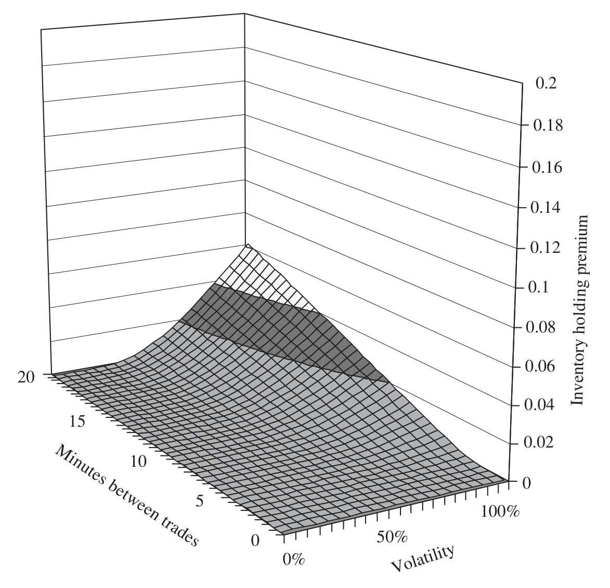
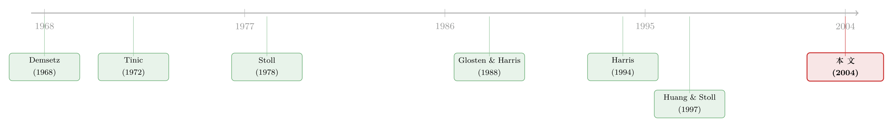

做市商的价差里，藏着一份「到期日不确定」的期权
本文读的是 Bollen, Smith & Whaley (2004, Journal of Financial Economics)：做市商挂出的买卖价差里，有一块是为「持仓期间的价格风险」收的保费——而这块保费的数学形态，恰恰是一份到期时间随机的平价期权。把它这样写下来，价差里的存货成本、逆向选择成本，乃至「这一笔是不是知情交易」的概率，就都能被一一拆出来、估出来。
1 一个被问了三十年、却始终没答好的问题
做市商（market maker）每天要做一件看似简单的事：对同一只股票，同时报一个买价（bid）和一个卖价（ask）。两者之差，就是买卖价差（bid/ask spread）。这是他提供「即时性」（immediacy）——也就是流动性——所收取的报酬。
问题来了：这份报酬，到底是为什么而付的？
这个问题不只是学术好奇。从交易所的角度，它关乎市场该怎么设计——是只派一个专营商（specialist），还是放开让一群做市商互相竞争？最小报价单位（tick size）又该定多大？从监管者的角度，它更关乎一件事：做市商收的这笔钱，是「公道的成本补偿」，还是「过高的垄断租金」？
要回答「公道不公道」，你得先知道价差由哪些成本构成。沿着 Stoll (1978b) 的经典划分，做市商的成本无非三类：订单处理成本（order-processing costs，OPC）、存货持有成本（inventory-holding costs，IHC）、以及逆向选择成本（adverse selection costs，ASC）。再加上竞争（competition）这一压低价差的力量，几乎所有早期实证都在估同一个回归：
$$SPRD_i = f(OPC_i,\; IHC_i,\; ASC_i,\; COMP_i).$$
从 Demsetz (1968) 到 Harris (1994)，这条线上挤满了名字。但所有这些研究，都绕不开一个尴尬：它们不知道这个 \(f(\cdot)\) 长什么样。
2 高 R² 的陷阱：当「拟合得好」其实什么都没说
早期研究的做法，是把一堆代理变量——股价、成交量、波动率、交易商数目——线性地塞进回归，看谁显著。Tinic and West (1974) 是个典型：他们用绝对价差做被解释变量时，调整后 \(R^2\) 只有 0.499；可一旦换成相对价差（价差除以中间价），\(R^2\) 一下跳到 0.804。到了 Harris (1994)，相对价差回归的 \(R^2\) 甚至高达 0.987。
看上去，模型越来越神。但作者尖锐地指出：这是个幻觉。
不妨做个思想实验。假设市场上所有股票的价差都恰好等于 1/8 美元——一个固定的常数。这时绝对价差回归会诚实地告诉你：所有斜率系数都是零，只有截距等于 1/8，模型毫无解释力。可换成相对价差呢？相对价差 = \((1/8)/S\)，它的全部变动都来自股价倒数 \(1/S\)。于是任何分母里带着股价的变量(比如「高低价差除以股价」这种波动率代理)都会显著——不是因为模型说出了关于价差的任何道理，而纯粹是因为变量和被解释变量共用了一个 \(S\)。 当股价的横截面差异越小，这个相对价差回归的拟合优度反而越趋近完美。
这正是用比率变量做回归的经典坑（Kronmal, 1993）。一个 0.99 的 \(R^2\)，可能恰恰是模型「什么都没解释」的证据，而非相反。
所以真正的症结，从来不是「再多塞几个变量」，而是：价差和它的决定因素之间，到底是什么函数关系？ 这些 ad hoc 的线性回归，都是经济学直觉拼出来的，没有一个是从严格的数学模型推出来的。
接着，一个自然的问题是：能不能给这个 \(f(\cdot)\) 找到一个有理论根基的、简洁的形式？
3 关键的一跃：做市商其实在「卖」一份期权
本文最漂亮的一步，是把存货成本这件事，翻译成一个期权定价问题。
先想清楚做市商的处境。他本来没有存货。一个客户来卖，他就在买价上接了一手——现在他多头持有一股，直到下一个买单出现、他能把货甩出去为止。在这段持有期里，他怕什么？怕价格在他脱手之前往下走。
这听起来像不像一份保险需求？是的。如果他能对冲，他大可去做空一份单一股票期货。设 \(\Delta S\) 是股价变动、\(\Delta F\) 是期货价变动、\(n_F\) 是对冲比率，他要解的是让对冲组合方差最小：
$$\min\; E\!\left[(\Delta S + n_F\,\Delta F)^2\right],$$
一阶条件给出最优对冲比率 \(n_F = -\,\mathrm{Cov}(\Delta S,\Delta F)/\mathrm{Var}(\Delta F)\)。在零利率、零股息、且股价与期货价完全相关的理想条件下，最优对冲就是每股卖一份期货，价格风险被完全消掉。
但反转出现了：现实里，单一股票期货（和单一股票期权）根本不是可行的对冲工具。能交易的那几只，期货市场的交易成本比股票还高、流动性还差——平均日成交量不到股票市场的 0.5%。换句话说，对冲的来回成本，比做市商能在股票市场赚到的还多。他没法对冲，只能裸扛这份价格风险。
既然要裸扛，他就要为此索取补偿。这份补偿，本文称作存货持有溢价（inventory-holding premium，IHP）。那他该收多少？
这里是第二个精彩之处：作者不用方差，而用下半方差（lower semi-variance）来定义风险。做市商真正在意的，不是价格的双向波动，而是「亏钱」这一侧。于是他设定 IHP，使得在价格对他不利时损失的下半方差最小：
$$\min\; E\!\left[(\Delta S + IHP \mid \Delta S < 0)^2\right].$$
对这个一阶条件求解，得到做市商愿意收取的最小溢价：
$$IHP = -\,E(\Delta S \mid \Delta S < 0)\,\Pr(\Delta S < 0).$$
读一遍这个式子的含义：最小 IHP，等于「价格不利变动时的预期损失」乘以「价格不利变动的概率」。 这不正是一份期权的价值吗——当价格跌破成本时才赔付，否则归零。事实上，做市商在买价上接货，需要的是一份平价看跌期权；在卖价上放货，需要的是一份平价看涨期权。两条路算出来一模一样。
用下半方差而非方差当风险度量，并非新发明。Markowitz (1959) 早就建议过——方差太保守，把正负极端都当成坏事；而做市商怕的只有下行。这条线后来在风险管理里以「预期损失」（expected shortfall）和条件在险价值（conditional value-at-risk, CVaR）之名重新走红（Artzner et al., 1999）。
于是，借用 Black-Scholes-Merton（下称 BSM）框架，给定一个已知的持有时间 \(t\)，这份平价期权的价值可以写成
$$IHP = S\,N\!\left(\frac{\ln(S/X)}{\sigma\sqrt{t}} + 0.5\,\sigma\sqrt{t}\right) - X\,N\!\left(\frac{\ln(S/X)}{\sigma\sqrt{t}} - 0.5\,\sigma\sqrt{t}\right),$$
其中 \(S\) 是开仓时的真实股价，\(X\) 是行权价，\(\sigma\) 是收益率标准差，\(t\) 是到下一笔抵消性成交的时间，\(N(\cdot)\) 是标准正态累积分布。由于这是平价期权（\(S=X\)，\(\ln(S/X)=0\)），上式优雅地坍缩为
$$IHP = S\left[\,2N\!\left(0.5\,\sigma\sqrt{t}\right) - 1\,\right].$$
到这里，价差里那块神秘的存货成本，终于有了一个有理论根基、且只含两个参数（波动率 \(\sigma\) 和持有时间 \(t\)）的闭式表达。
（做市商「裸扛风险却要为此定价」这件事的另一面，可参见《无风险市场里的风险厌恶：是谁给做市商系上了「风险限额」这根绳》。）
4 真正卡住的一步：你不知道这份期权什么时候到期
但事情没完。上面那个 \(t\)——做市商持有这股、直到抵消性成交到来的时间——在交易发生的那一刻，是未知的。他不知道下一个买单是 30 秒后来，还是 20 分钟后来。
这才是本文标题里那句「stochastic time to expiration」的来历：这份期权的到期时间本身是随机的。
怎么办？把持有时间看成一个随机变量，对它的分布求期望。设 \(p(t)\) 是抵消性成交在时刻 \(t\) 到来的概率密度，那么做市商在开仓时应当评估的预期存货持有溢价就是：
这个积分，等价于给一份到期时间随机的欧式期权定价。它就是全文的核心方程。
直觉上，它把两件事干净地分了开：\(S[2N(0.5\sigma\sqrt t)-1]\) 这一项管的是「单位时间的价格风险有多大」（由波动率 \(\sigma\) 决定），而 \(p(t)\) 这一项管的是「做市商要扛多久」（由交易频率决定）。交易越活跃、抵消单来得越快，\(p(t)\) 越集中在很小的 \(t\) 上，IHP 就越低——这恰好把 Demsetz (1968) 当年那个朴素直觉（交易频率越高、等待成本越低、价差越窄）严格地写进了公式里。值得注意的是，由于做市商通常当日清仓，\(t\) 的上界就是一个交易日，即年化口径下的 1/252。
那么，把这份「随机到期」的期权，跟一份「到期日固定的平价期权」相比，差多少？这正是论文 Figure 3 想说的事：忽略到期时间的随机性，会让你系统性地误估存货溢价。

Figure 3: Difference between expected inventory-holding premium modeled as an at-the-money call and
（「等待买家的时间」本身就是流动性的价格，这一点在场外市场里被讲得更透——参见《价格里那道折扣，量的是「找不到买家」的时间》。）
5 从「存货溢价」里再切出「逆向选择」
如果故事到此为止，本文已经足够漂亮。但作者又往前走了一步，回答了微观结构里最纠缠的一个老问题：怎么把逆向选择成本单独识别出来？
关键的观察是：上面这份 IHP，补偿的是所有交易共有的价格风险——不管对手盘是知情的还是不知情的，做市商接了货都要扛波动。但当对手盘里混着知情交易者（informed traders，比如提前知道盈余、重组、换帅消息的人）时，做市商面对的不再是对称的价格风险，而是「系统性地站在了消息的错误一侧」。这部分额外的预期损失，才是逆向选择成本。
正因为 IHP 这份期权的价值是先验可算的（给定 \(\sigma\) 和 \(p(t)\)），把它从实际观测到的价差里减出去，剩下的那块就能归给逆向选择。沿着这个逻辑，模型甚至反解出了「这一笔是知情交易」的概率——这是 Easley et al. (1996) 那一系的核心目标，而本文用一个期权定价的壳，顺手把它装了进来。
（用买卖价差里的逆向选择成分去「读」别的信息，是个很能生长的思路——比如《评级藏在买卖价差里：当股票的「逆向选择」预言了公司的信用》。）
6 数据与实证：三个 tick size 制度，一个干净的实验
模型要检验，最好的场景是 tick size 发生过外生变化的时候——因为价差里那块价格离散性成本（最小报价单位强加的「拢整」）会随 tick 变化，而存货溢价不会。本文恰好抓住了 Nasdaq 普通股的三个不同制度：
1996 年 3 月：八分之一美元报价（eighths）；1998 年 4 月：十六分之一美元报价（sixteenths）；2001 年 12 月：十进制报价（decimals）。
在这三个 tick 制度下分别估计模型，作者报告：模型无论从绝对意义上，还是相对于竞争性设定，都表现良好，并据此给出了价差各成本成分的分解，以及知情交易概率的估计。竞争这一维，则沿用 Tinic (1972) 引入微观结构的 Herfindahl 集中度指数：
$$HI = \sum_{j=1}^{NM}\left(\frac{V_j}{TV}\right)^2,$$
其中 \(V_j\) 是第 \(j\) 个做市商的成交量，\(TV\) 是总成交量，指数从 \(1/NM\)（完全竞争）到 \(1\)（垄断）。
本文的实证野心其实是「双重」的：既要证明这个期权模型能拟合真实价差，又要证明模型设定本身会左右你对决定因素的推断——也就是说，前面那些用相对价差跑出 0.987 的研究，问题不在数据，而在函数形式。
7 文献脉络
把这条线捋一遍，会看到一个清晰的接力。
最早是 Demsetz (1968)，他把「交易成本」概念化，提出价格、交易频率、股东数目这些代理变量——奠定了「价差是为流动性付费」的基调。紧接着 Tinic (1972) 把竞争、把 Herfindahl 指数引进来，让这条线有了产业组织的味道。
真正的转折在 Stoll (1978b)：他第一次为价差写下一个显式的理论模型，把成本分成订单处理、存货持有、逆向选择三类，并指出存货成本里藏着「收益波动率 × 预期持仓时间」这一乘积项——这个被前人忽略的细节，正是本文存货溢价的种子。

接着，文献分出两支。一支沿着「拆解价差成分」走：Glosten and Harris (1988) 用交易价格序列估计成分，到 Huang and Stoll (1997) 集大成，给出一个能嵌套众多统计模型的一般框架，并发现订单处理成本才是价差的主导项。另一支沿着「tick size 如何扭曲推断」走：Harris (1994) 警告，最小报价单位会系统性地改变价差与决定因素之间的估计关系。
本文（2004）所处的位置，是把这两支重新焊在一起：它既给出一个有理论根基、可识别成分的结构模型（呼应 Stoll 与 Huang-Stoll），又把 tick size 当成识别的杠杆而非麻烦（呼应 Harris）。而它真正独有的贡献，是把存货与逆向选择成本，一并装进「随机到期期权」这一个壳里——这是这条三十多年的脉络上，此前没人摆过的角度。
8 评论与延伸（Q&A + 研究方向）
(a) 几个可能的疑问
Q：把存货成本说成一份「期权」，是真有定价含义，还是只是个比喻？
是真定价。Eq (5) 的 \(-E(\Delta S\mid\Delta S<0)\Pr(\Delta S<0)\) 在数学上就是平价期权的赔付期望，作者据此直接套用 BSM 闭式（Eq 6–7）。所以「期权」不是修辞，而是给了价差一个两参数的、可估的函数形式——这恰恰是早期 ad hoc 回归缺的那块。
Q：为什么坚持用下半方差，而不是更省事的方差？
因为做市商的风险是单边的。他怕的是接货后价格往下走，而不是双向波动。方差会把对他有利的上涨也算成「风险」，从而高估他该收的溢价。下半方差只惩罚下行，与做市商真实的损益结构对齐，也自然接上了 expected shortfall / CVaR 那条风险管理脉络。
Q：用 BSM 给一份「几分钟到期」的期权定价，正态假设撑得住吗？
这是最该担心的地方。极短期内股价跳跃、离散 tick、价格的非正态性都会让 BSM 的几何布朗运动假设承压。作者用零利率、零股息来简化是合理的（持有期是日内），但波动率 \(\sigma\) 在分钟尺度上的估计与「连续扩散」假设，仍是模型的软肋。
Q：持仓时间分布 \(p(t)\) 怎么来？这会不会是「随便挑一个好看的分布」？
这是识别的命门。Eq (9) 的结果完全取决于你给 \(p(t)\) 选什么形式——指数分布、还是更厚尾的到达过程，会给出不同的 IHP。作者选「合理且可处理」的分布，但只要 \(p(t)\) 设定错了，分解出来的存货成本与逆向选择成本就会跟着错。
Q：那个高达 0.987 的相对价差 \(R^2\)，到底错在哪？
错在比率变量的「伪拟合」。相对价差 = 绝对价差 / 股价，当绝对价差近乎常数时，它的全部变动来自 \(1/S\)，于是任何分母带 \(S\) 的解释变量都会显著。\(R^2\) 越高，越说明回归在重复股价倒数的故事，而非在解释价差本身（Kronmal, 1993）。
Q：模型把 IHC 和 ASC 分开了，可两者用的都是同一个 \(\sigma\)，凭什么说分得开？
靠的是「共有 vs. 额外」的逻辑。IHP 补偿对所有对手盘都一样的对称价格风险，可先验算出；逆向选择则是知情交易带来的额外单边损失。把可算的 IHP 从观测价差里扣掉，残差归给逆向选择——前提仍是 \(\sigma\) 与 \(p(t)\) 估对了，否则两块成本会互相「串味」。
(b) 几个可能的研究问题与提案
-
把「随机到期期权」搬到公司债市场。 【经济故事】公司债是场外、交易稀疏的市场，做市商持仓往往要扛好几天才等到对手盘——正是「持有时间随机且很长」的极端情形，本文模型的 \(p(t)\) 在这里张力最大。把存货溢价从公司债买卖价差里拆出来，能直接回答「危机里价差暴走，到底是存货风险还是逆向选择」。 【可行性】中。需要 TRACE 逐笔成交数据估 \(p(t)\) 与 \(\sigma\)，识别难点在于债券交易太稀、\(p(t)\) 估计噪声大；可借鉴《把「成交价」从「成交量」里解放出来——重新丈量公司债的流动性》的成交量处理思路。
-
外资持有人如何改变 \(p(t)\)？ 【经济故事】若外资交易者的到达节律与本地投资者不同（比如时区、信息节奏差异），他们的进出会改变做市商的预期持仓时间，从而改变存货溢价这一块的价差。这给「外资影响流动性」提供了一个机制层面而非纯相关的检验。 【可行性】中。需要带交易者类型标记的逐笔数据（如新兴市场交易所的 broker-level 数据），识别上可用外资准入或可投资度的外生变化做冲击。
-
用 tick size 改革做存货溢价的「安慰剂检验」。 【经济故事】tick size 变化直接动的是价格离散性成本，理论上不该动存货溢价。若模型估出的 IHP 在 tick 改革前后稳定、而价格离散成分如预期跳变，就是对模型设定的一次干净背书。 【可行性】高。本文已用三个 Nasdaq 制度，可直接扩展到 2016 年美国 Tick Size Pilot 这一随机化实验，识别极干净。
-
把 \(\sigma\) 换成期权隐含波动率。 【经济故事】本文用历史收益率波动率，但做市商面对的是前瞻风险。用同一只股票的隐含波动率（IV）替换 \(\sigma\)，看 IHP 的拟合是否改善，能检验做市商定价时到底盯的是历史还是预期波动。 【可行性】高。有流动期权的大盘股可直接取 IV，数据现成；难点只在 IV 的期限要匹配到日内的极短 \(t\)。
9 我的判断
本文最大的贡献，是给一个被研究了三十多年、却始终缺乏函数形式的老问题，提供了一个简洁、有理论根基、且参数可识别的答案：把存货与逆向选择成本，统一写成一份「到期时间随机的平价期权」。这个壳的妙处在于一鱼三吃——既给了价差闭式，又分离了两类成本，还反解出知情交易概率。它对「相对价差高 \(R^2\) 是幻觉」的批评，至今对做实证的人仍是当头棒喝。
但识别上有两处我会盯紧。其一是 \(p(t)\) 的设定：全文结论高度依赖持仓时间分布的形状，而这恰恰是最难从数据里干净估出、又最容易「挑一个好看的」的环节——它几乎决定了 IHC/ASC 的切分比例。其二是 BSM 在分钟尺度上的适用性：用几何布朗运动给一份几分钟到期的期权定价，碰上跳跃和离散报价，正态假设是否还站得住，值得用高频数据正面检验。
后续我最想看到的，是把这套框架搬到场外、低频、长持仓的市场（公司债最典型）去做压力测试——在那里 \(p(t)\) 的随机性被放到最大，模型若仍成立，才算真正经得起考验；若不成立，失败的方式本身也会告诉我们，存货溢价这个概念的边界在哪里。
参考文献
- Artzner, P., Delbaen, F., Eber, J.M., Heath, D. (1999). Coherent measures of risk. Mathematical Finance 9, 203–228.
- Bagehot, W. (1971). The only game in town. Financial Analysts Journal, 12–22.
- Bawa, V.S., Lindenberg, E.B. (1977). Capital market equilibrium in a mean-lower partial moment framework. Journal of Financial Economics 5, 189–200.
- Black, F., Scholes, M. (1973). The pricing of options and corporate liabilities. Journal of Political Economy 81, 637–659.
- Bollen, N.P.B., Smith, T., Whaley, R.E. (2004). Modeling the bid/ask spread: measuring the inventory-holding premium. Journal of Financial Economics 72, 97–141.
- Demsetz, H. (1968). The cost of transacting. Quarterly Journal of Economics 82, 33–53.
- Easley, D., Kiefer, N.M., O'Hara, M., Paperman, J.B. (1996). Liquidity, information, and infrequently traded stocks. Journal of Finance 51(4), 1405–1436.
- Glosten, L.R., Harris, L. (1988). Estimating the components of the bid–ask spread. Journal of Financial Economics 21, 123–142.
- Harris, L. (1994). Minimum price variations, discrete bid–ask spreads, and quotation sizes. Review of Financial Studies 7, 149–178.
- Huang, R.D., Stoll, H.R. (1997). The components of the bid–ask spread: a general approach. Review of Financial Studies 10(4), 995–1034.
- Kronmal, R.A. (1993). Spurious correlation and the fallacy of the ratio standard revisited. Journal of the Royal Statistical Society, Series A 156, 379–392.
- Markowitz, H. (1952). Portfolio selection. Journal of Finance 12, 77–91.
- Markowitz, H. (1959). Portfolio Selection. Wiley, New York.
- Merton, R.C. (1973). Theory of rational option pricing. Bell Journal of Economics and Management Science 4, 141–183.
- Stoll, H.R. (1978b). The pricing of security dealer services: an empirical study of Nasdaq stocks. Journal of Finance 33, 1153–1172.
- Tinic, S. (1972). The economics of liquidity services. Quarterly Journal of Economics 86, 79–93.
- Tinic, S., West, R. (1974). Marketability of common stocks in Canada and the U.S.A.: a comparison of agent versus dealer dominated markets. Journal of Finance 29, 729–746.